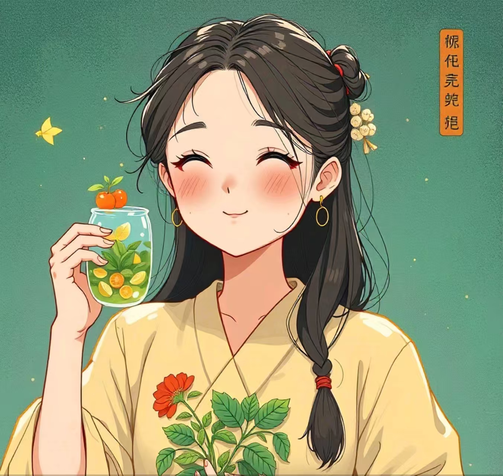
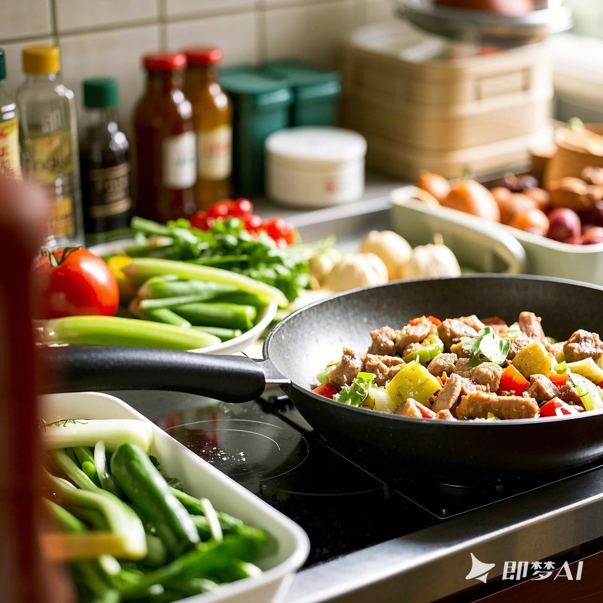
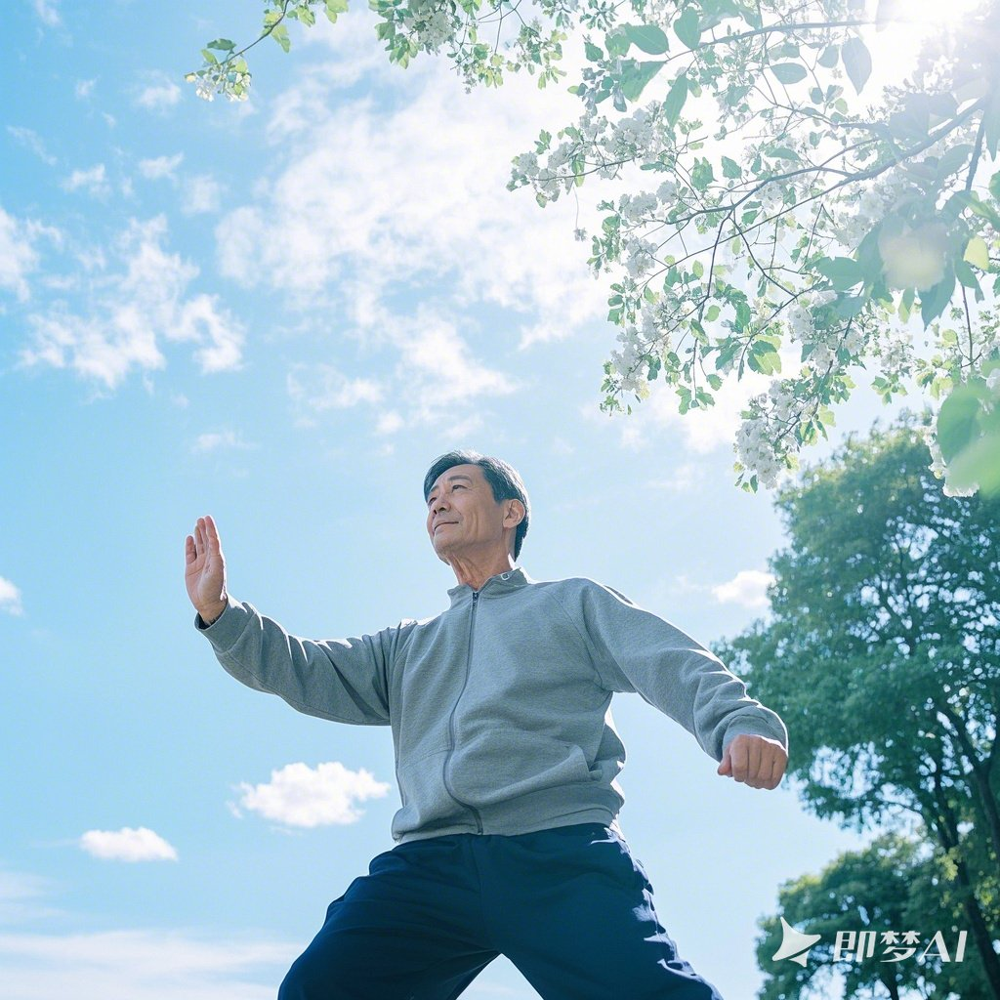

冬季养生指南
冬藏精气，静养为先
冬季养生原则
冬季是万物闭藏的季节，气候寒冷干燥。中医认为，冬季养生应当"秋冬养阴"，保护阳气，藏精蓄锐，为来年的生发做准备。
冬季养生的核心原则是：
- 养肾为主：冬季对应肾脏，养肾固本是冬季养生的重点
- 早睡晚起：顺应自然界阳气闭藏的特点，保护阳气
- 防寒保暖：注意保暖，特别是背部和脚部
- 静养为主：减少剧烈活动，保存体内阳气

冬季饮食指南
饮食原则
冬季饮食应以温补为主，少食生冷，多食温热食物，以养肾阳。饮食宜温热，少食寒凉，以适应寒冷气候。
推荐食物

羊肉
温补肾阳，祛寒暖身
核桃
补肾健脑，温肺定喘
黑豆
补肾强身，活血解毒
红枣
补气养血，健脾和胃
冬季运动建议
冬季运动应以温和为主，避免大量出汗，保护体内阳气，适当的室内运动可以增强免疫力，预防疾病。
推荐运动
- 太极拳：动作柔和，可以在室内进行，不易大量出汗
- 八段锦：简单易学，可以温养脏腑，增强免疫力
- 室内散步：保持适度活动，促进血液循环
- 瑜伽：室内进行，可以舒展筋骨，调节呼吸

冬季养生小贴士
保暖防寒
注意保暖，特别是背部和脚部，避免受寒，预防感冒和关节疼痛。
作息调整
冬季宜早睡晚起，保持充足睡眠，顺应自然界阳气闭藏的特点。
皮肤护理
冬季皮肤容易干燥，注意保湿，多喝水，使用保湿产品，预防皮肤干裂。
呼吸保健
冬季空气干燥，注意室内湿度，预防呼吸道疾病，可以适当进行呼吸训练。